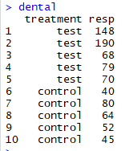

1 . Var() =
2 . sd() =
3 . Z = =
~ N(0,1) => Z는 평균이 0 표준편차가 1인 표본정규분포를 따른다.
4 . t = =
~ t(n-1) => t는 자유도가 (n-1)인 t-분포를 따른다.
Ex ) 2006년 1인 1일 평균 알코올 섭취량 = 8.1 , x = 15.50,11.21,12.67,8.87,12.15,9.88,2.06,14.50,0.00,4.97(x는 2008년 알코올 섭취량)
=> mean(x) = 9.181 , sd(x) = 5.234965 => mean(x) - 8.1 = 1.081
-> 1.081이라는 차이가 귀무가설하에서 우연히 발생할 수 있는 차이라고 보고 2008년 알코올 섭취량이 2006년 알코올 섭취량에 비해 특별히 다르지 않다는 결론
-> 1.081이라는 차이를 크다고 보고 유의한 차이가 있다는 결론
=> 검정통계량 = sqrt(length(x))*(mean(x)-8.1)/sd(x) = 0.6529981
-> 이 t값 0.653은 2008년 알코올 섭취량의 진짜 평균이 8.1이라면 자유도가 9인 t분포를 따른다.
-> 이 t값 0.653이 0으로부터 많이 멀다면 평균이 8.1일 가능성이 낮아 평균이 8.1이라는 귀무가설을 기각하고 , 그렇지 않다면 귀무가설을 기각하지 않는다.
1 . -> 2*(1-pt(0.653,df=9)) = 0.5300818
2 . -> 1-pt(0.653,df=9) = 0.2650409
먼저 정규성 검정을 한 후 데이터가 정규분포를 따르면 t-test를 한다.
- 정규성 검정

=> 귀무가설 : x가 정규분포를 따른다 .
=> 대립가설 : x가 정규분포를 따르지 않는다 .
=> 검정통계량 : W = 0.9234
=> p-value : 0.3863 > 0.05
=> 결론 : x가 정규분포를 따른다
- t-test
=> 귀무가설 : = 8.1
=> 대립가설 :
8.1
=> 검정통계량 : t(df=9) = 0.653
=> p-value : 0.5301 > 0.05
=> 결론 : 2008년 평균 음주량은 8.1과 유의한 차이가 없다.
단측 검정
=> alter = "greater" => 대립가설이 > 8.1
=> alter = "less" => 대립가설이 < 8.1
유의수준 설정
